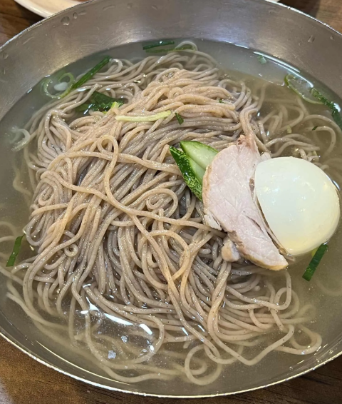
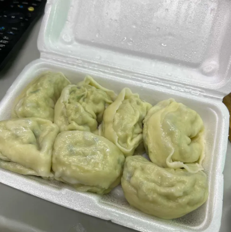
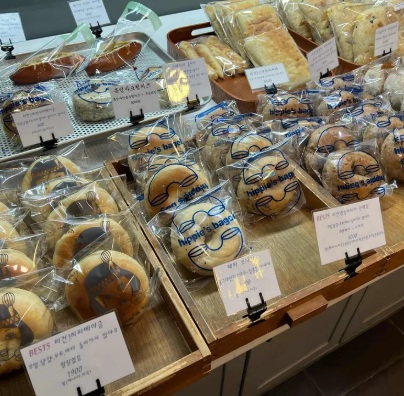
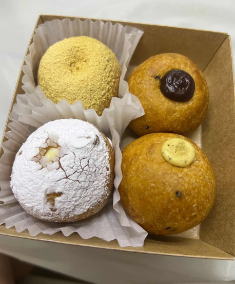
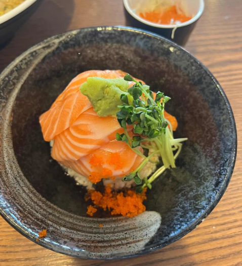

덕성여자대학교는 서울 도봉구 삼양로144길 33에 있습니다.
주변에 맛있는 음식점이 널려 있습니다.
| 대표이미지 | 상호 | 구분 | 평점 | 위치 |
|---|---|---|---|---|
|  | 춘천막국수 | 막국수, 녹두전 | 4.4 | 서울특별시 강북구 삼양로141길 4-4 춘천막국수 |
|  | 예와 손만만두 | 만두, 만두전골 | 4.6 | 서울특별시 강북구 4.19로 40-8 예와손만두 |
|  | 히피스베이글 | 베이글, 빵 | 4.7 | 서울특별시 강북구 삼양로 528 1층 |
|  | 도너츠 윤 | 도넛, 찹쌀도너츠 | 4.8 | 서울특별시 강북구 삼양로 530 |
|  | 유키가후르 | 일본가정식, 사케동 | 4.0 | 서울특별시 강북구 한천로172가길 2 |